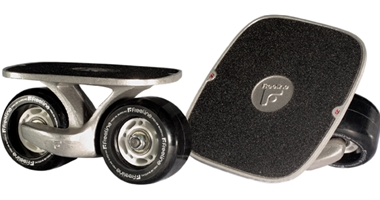

這是Freeline的OG板，也是我現在用的板
(圖片中的連結點進去是日本官網)
OG是Freeline第一代的款式，無論滑手的要求多高，OG都能如你所想。
材料是用356-T6航空鋼精鑄成，板的骨架內有鋼筋軸，能夠承受3000磅的重量。
OG是最堅固的Freeline Skates！
輪板運動由易到難是蛇板>>雙龍板>>飄移板
Q：三者的最簡單區隔是什麼?
1.雙龍板是分開的蛇板
2.飄移板是輪子固定的雙龍板
Q：為什麼一開始先練飄移?
A：有些人會選擇從最簡單的蛇板練起，但飄移是最難的，所以我推薦先練飄移，
只要先學會飄移其他的板就很容易上手，從最難的開始也會讓我們的底子比別人更好。